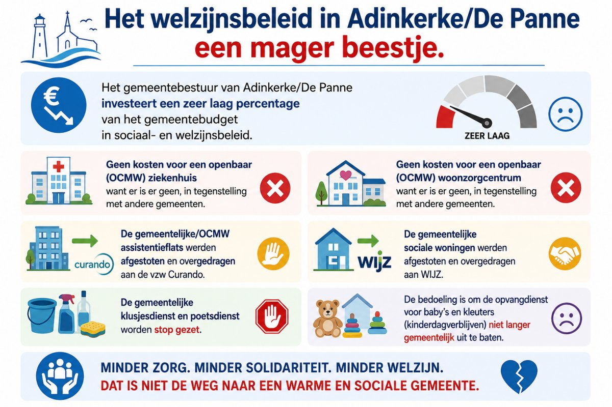

🚑 Geen kosten voor een openbaar (OCMW) ziekenhuis want er is er geen, in tegenstelling met veel andere gemeenten
😌 Geen kosten voor een openbaar (OCMW) woonzorgcentrum want er is er geen, in tegenstelling met veel andere gemeenten
❌ De gemeentelijke/OCMW assistentieflats werden afgestoten en overgedragen aan de vzw Curando
🗝️ De gemeentelijks sociale woningen werden afgestoten en overgedragen aan WIJZ
🛠️ De gemeentelijke klusjesdienst en poetsdienst worden stop gezet.
👪 De bedoeling is om de opvangdienst voor baby’s en kleuters (kinderdagverblijven) niet langer gemeentelijk uit te baten.

Kinderopvang - Kinderdagverblijven
Stopzetting gemeentelijke uitbating kinderopvang ?
Kinderdagverblijf Doremi in Adinkerke
Kinderdagverblijf 't Wiske in De Panne